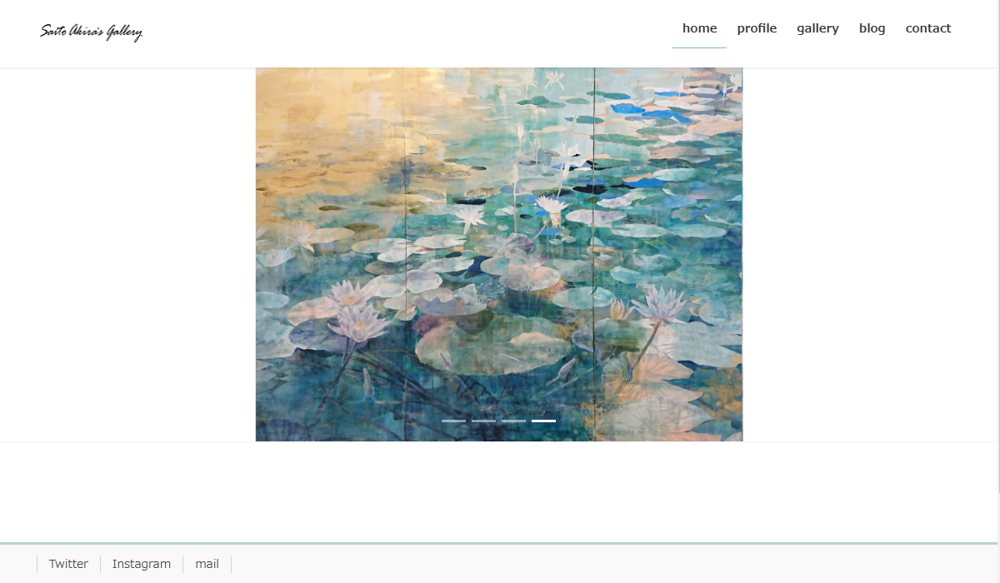
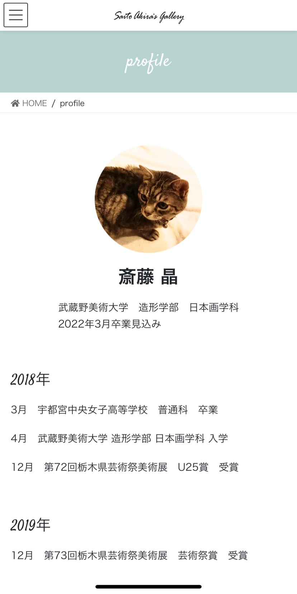
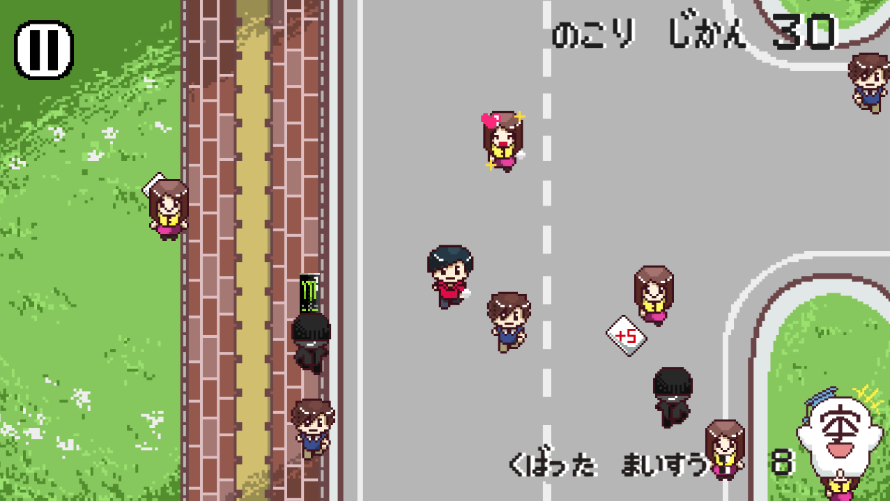
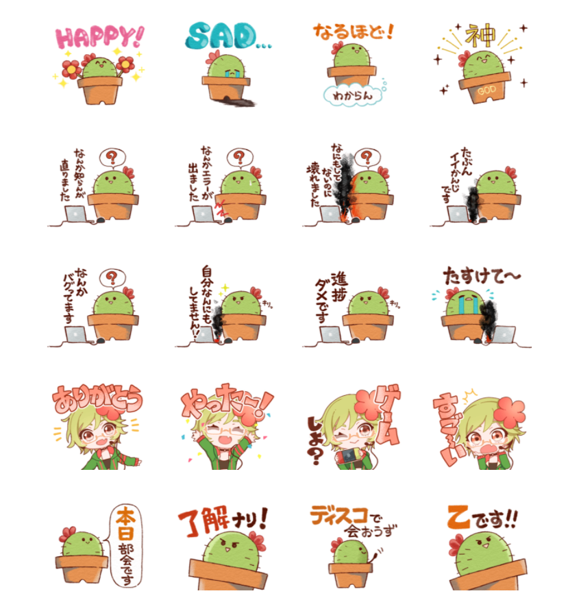

works.
website
Saito Akira`s Gallery


美大に所属している友人のホームページをWordPressで制作しました。
作品を目立たせたかったので,白を基調にしたシンプルなデザインにしました。
プロフィールのページはPCの時とスマホの時でレイアウトが変わるように,flexboxを用いて実装しました。
実際のページはこちら(外部サイトに飛びます)
game
びらくば

Unityを用いて,ビラを配った枚数を競う2Dゲームを開発しました。
コロナ禍で大学のサークルのビラ配りが無くなってしまったので,
代わりにゲームでもいいからビラを配れるところがあればと思い,制作しました。
制作期間は約2ヶ月弱です。
こちらで遊べます(音が出ますので,ご注意ください)
other
LINE sticker

趣味のデジタルイラスト制作を生かして,所属しているサークルのLINEスタンプを制作しました。
サークルで共通して皆プログラミングやゲームが趣味なので,メンバーの意見を取り入れながら,
そういった方が使いたいと思うようなスタンプを目指しました。
制作期間は3週間です。(ここに掲載しているのはその一部です)